The prevalence of gun violence in schools in the United States has been referred to both as an epidemic and a public health crisis, and one that has steadily increased over the past several decades, as can be seen by the following plot. Apart from the trauma that such an event can bring to a community, there is also resonant fear that such incidents inspire copycat events on a local and a larger scale. This spatial analysis attempts to model the incidence of these shootings as a Poisson point process, in order to ascertain whether the locations and events occur with complete spatial randomness, and thereafter create a model with which these events can be predicted. Ultimately, a Cox Matern cluster process model was decided upon, which lead us to conclude that school shooting events may in fact give rise to future school shootings around them.
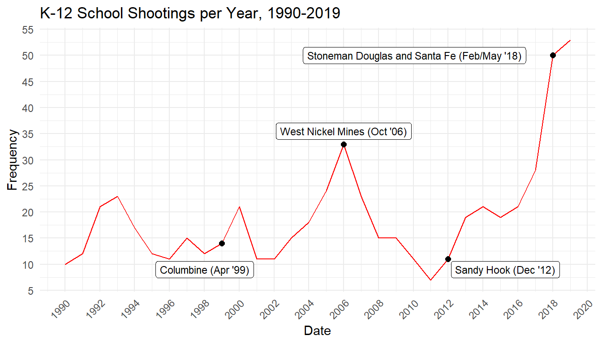
The data was sourced directly from the K-12 School Shooting Database made available by the Center for Homeland Defense and Security, and was specifically subset to between the years of 1990-2019. The information that comprises the dataset was determined by a specific process which entailed asking what exactly comprises a school shooting. Although the original database contains shootings ruled accidental (from misuse of a firearm) as well as incidences of gang-related gun violence on school grounds, suicide, or using a firearm to damage school property, we did not opt to consider this data as relevant to this study in particular. Targeted events related to domestic situations such as incidents between the perpetrator and their bully, or the escalation of disputes such as fistfights in which one person pulls out a firearm however, were ruled school shootings for the purposes of this study.
As we can see from the following plots, these events tend to occur in and around the same places, which gives credence to our hypothesis that the events exhibit a clustered pattern. We notice in fact, that there are areas that seem relatively untouched by school shootings in the western United States, whereas shootings all across the South, Midwest and the East Coast recur a great deal. While the West Coast is somewhat blighted by school shootings, particularly in the San Francisco and Los Angeles metropolitan areas, along with major cities in the Pacific Northwest), it is not nearly at the rate experienced by the other side of the US. A visual mapping of the kernel density of this point pattern is placed in the Appendix for reference.
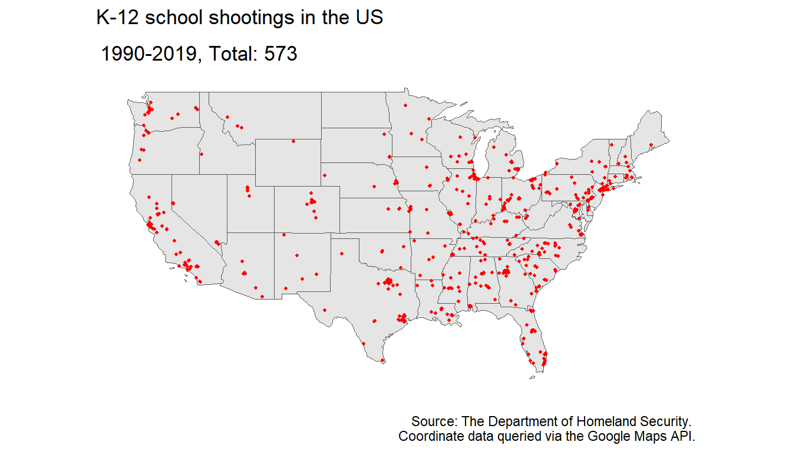
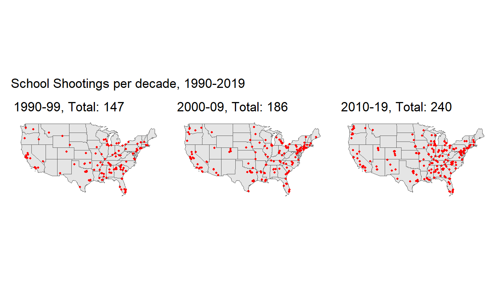
One thing that it is important to note, as with many spatial analyses that relate to events caused by humans, that the rate of these events do correlate in areas with high population density, i.e. there are more school shootings in states where many people live, particularly California and Florida (see Appendix for a plot of population per state in 2019). While the implications of this will not be well explored in this literature, it is important to take note of as a confounding factor when asking questions about the frequency of these events.
With respect to the coordinate-level data, as with any spatial point pattern analysis, we are concerned with the following three questions, 1) whether the points are located at random, 2) whether they are clustered, and 3) whether they are a regular point pattern.
The hypothesis of complete spatial randomness, or a homogeneous Poisson process, asserts the following:
The intensity function \(\lambda(s)\), also known as the first-order property of the spatial point process, is defined as
\[\lambda(s) = \lim_{|\Delta s| \to 0} \frac{E[N(\Delta s)]}{| \Delta s|}\]
In a homogeneous Poisson process the distribution of events is scattered all throughout the space such that there are no clusters anywhere nor any consistent pattern, an example of this can be seen by the following plot.
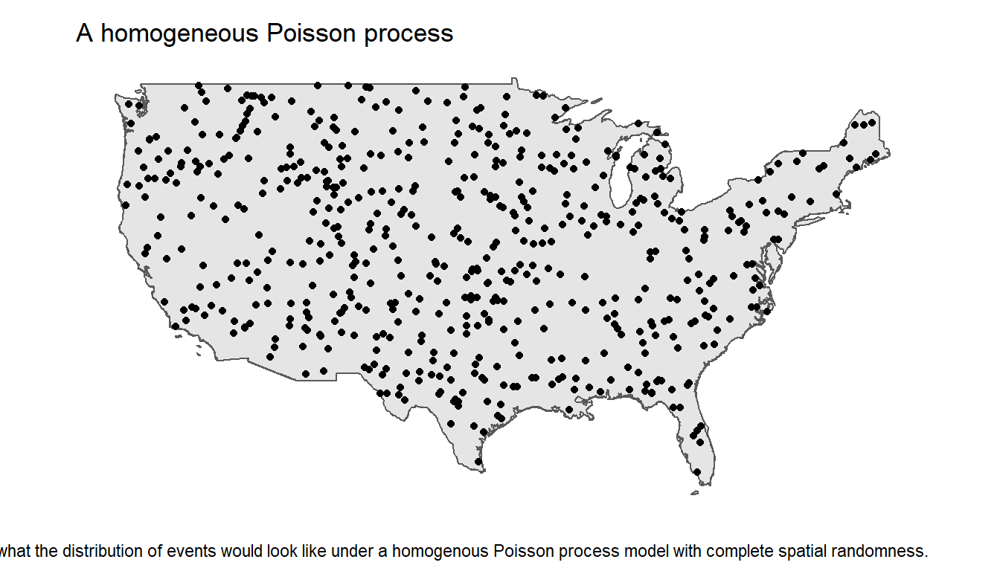
We want to test formally that the data does not follow such a distribution. We can do this by conducting a quadrat test.
As a tool for diagnosing complete spatial randomness, we can split up the spatial domain into what are referred to as quadrats, small subsets of the event space, and counting the number of events contained within each quadrat. We can test against the hypothesis of complete spatial randomness by generating a \(\chi^2\) test statistic based on the number of expected vs observed events in each quadrat.
The quadrat plot of the process is given by the following:
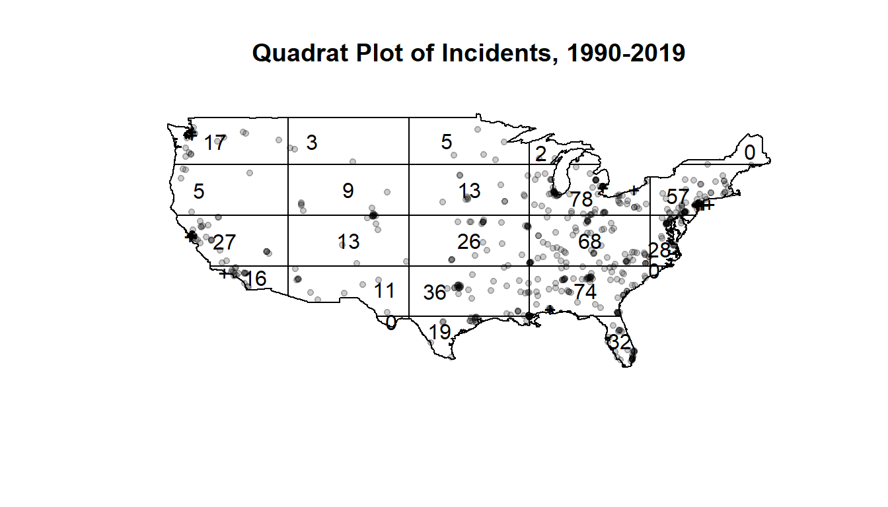
It’s important to note the count of events contained within each quadrat is dependent on the definition of these dimensions, so they can be subject to misleading conclusions as a result. Since the continental United States is not shaped like a simple polygon, dividing it into a reasonable number of equitable and reasonably defined quadrats is not an easy task and this is a shortcoming we have to recognize.
One methodology for testing for clustering is a Monte Carlo quadrat test in which we take a number of simulations of patterns under the null hypothesis e.g. the homogeneous Poisson point pattern we observed, and compute a Pearson’s \(\chi^2\) test statistic based on the expected and observed counts in each quadrat, and their residuals. The alternative hypothesis varies depending on the test, but we want to determine specifically whether 1) the pattern is homogeneous or not and 2) whether the pattern is clustered.
The \(\chi^2\) test statistic is given as follows
\[\chi^2 = \sum_{i=1}^n \frac{(O_i - E_i)^2}{E_i}\]
where \(O_i\) is the number of observed events, \(E_i\) is the number of expected events under the null hypothesis \(H_0\) of complete spatial randomness, and \(n\) is the total number of events.
| Null hypothesis | Alternative hypothesis | Test Statistic | p-Value | Conclusion |
|---|---|---|---|---|
| X is a homogeneous Poisson process | X is not a homogeneous Poisson process | 571.0472 | 4e-04 | reject H0 |
| X is a homogeneous Poisson process | X is a clustered point pattern | 571.0472 | 2e-04 | reject H0 |
Based on this table, we have the results of two separate quadrat tests for our point pattern \(X\), with the null hypothesis of complete spatial randomness against the corresponding alternative hypotheses of 1) \(X\) not being a homogeneous Poisson process and 2) \(X\) being a clustered point pattern.
In both cases, our test returns a corresponding p-value of approximately zero, so we have evidence to reject \(H_0\) in both cases and conclude that we have respectively in \(X\) not only an inhomogeneous Poisson process but a clustered point pattern as well. We can further illustrate this via Ripley’s K-function, or more specifically, a transformation of it.
Ripley’s K-function of a point process is defined so that \(\lambda K(r)\) equals the expected number of additional random points within a distance \(r\) of a typical random point of the point process \(X\), and is determined by the second order moment properties of \(X\). Deviations between the empirical and theoretical K-function give us evidence of spatial clustering or regularity.
\[K(r) = \pi r ^2\]
There are various transformations of the K-function, for example the L-function proposed by Julian Besag, which stabilizes the variance, or the G-function, which is the cumulative distribution function of the distance from a typical random point of \(X\) to the nearest other point of \(X\), which is particularly effective in diagnosing clustering behavior in a point process.
The G-function is given by
\[G(r) = 1 - \exp(-\lambda \pi r^2) = 1 - \exp(-\lambda K(r))\]
We can generate an “envelope” of simulated G-functions based on a spatially random Poisson point pattern, and compare our empirical G-function from the data to ascertain whether the point pattern \(X\) has complete spatial randomness or if it is clustered.
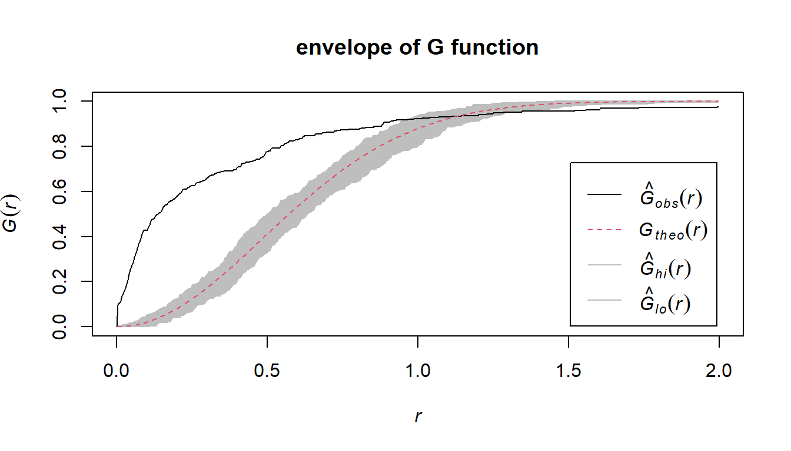
Contained in this figure we do see a marked difference where the empirical G-function exceeds the theoretical G-function up to approximately \(r = 1\), after which point it crosses the envelope of the point process which exhibits CSR and emerges underneath it. This does give us evidence that the underlying point process is clustered, which agrees with the earlier conclusion of our quadrat test.
Given that we have confirmed via the quadrat tests and G-function that the Poisson process is inhomogeneous as well as clustered, our goal at this point is to develop a model with which we can estimate the intensity function \(\lambda(s)\).
There are two different methods that we can model this clustered process: the first, the inhomogeneous Poisson process, assumes that the process varies spatially as a function of certain covariates, and assumes that the events themselves are independent. In this context an inhomogeneous Poisson process assumes that the rate of school shootings (independently) varies across the spatial domain, which is the continental United States.
The second method, the Cox process, which is itself a generalization of the inhomogeneous Poisson process, treats the intensity function \(\lambda(s)\) itself as a stochastic process that we can model in the same manner as the first method. The latter also assumes that the events are not independent of each other. A more benign example of such a process might be the growth of a forest, since trees leave seeds around them which then can grow into even more trees. In this context, a Cox process model assumes that one school shooting event can create even more.
For an inhomogeneous Poisson process, given the number of events \(N(B)\) in a subset \(B\) of the spatial domain \(S\), the likelihood of an inhomogeneous point process is given by
\[P(N(B) = n) \Pi^n_{i=1} P(x_i = s_i) = \frac{1}{n!} \exp(- \int_B \lambda(s) ds) \Pi^n_{i=1} \lambda(s_i)\]
and the log-likelihood is proportional to
\[\log(\lambda(s))= \sum_{j=1}^p \beta_j x_j(s)\]
We can then model the intensity function as
\[\log (\lambda(s)) = \sum_{j=1}^p \beta_j x_j(s)\]
where \(x_j(s), j = 1,...p\) are \(p\) covariates, such that the log-likelihood is a function of the parameter coefficients \(\beta_j\).
We fit a clustered inhomogeneous Poisson point process model, using the Matern cluster algorithm. We do not use any other covariates other than the coordinates in this model. We can use the same methodology of a quadrat test as we enacted earlier to test the model’s appropriateness, except this time the model under the null hypothesis \(H_0\) follows that of the estimated intensity function \(\lambda(s)\) of our fitted model, rather than that of a homogeneous Poisson process. Our alternative hypothesis \(H_A\) is that the true underlying pattern is more clustered than that of the null model. The envelope of the K-function also confirms this, as the K-function is higher than the theoretical fitted K-function.
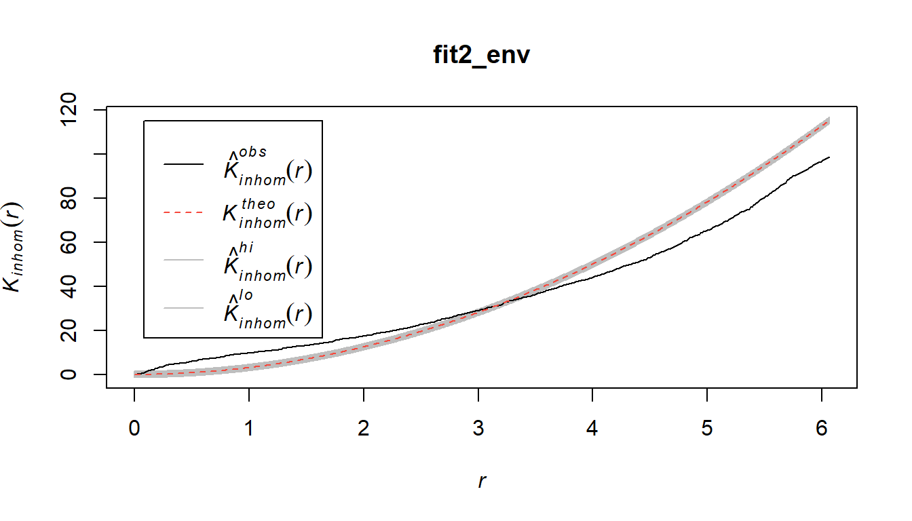
With a \(\chi^2\) test-statistic of \(228.81\), we have a p-value of \(0.001\) which gives us sufficient evidence to reject the fitted inhomogeneous Poisson process model under the null hypothesis, and conclude that the true underlying Poisson process is even more clustered than that of this model.
Having ruled this model out, we want to move on to the Cox point process model, more specifically, the Matern cluster point process.
Cox process models treat the intensity function \(\lambda(s)\) as a stochastic process, adding a significant layer of complexity (and flexibility) relative to the somewhat inflexible inhomogeneous Poisson process model. More specifically we will be discussing the Matern cluster process model.
The Matern cluster point process is formed by taking a pattern of “parent” points, generated according to some Poisson process with intensity parameter \(\kappa\), and then generating around it a random number of “offspring” which is itself a Poisson random variable with mean \(\mu\). The locations of the offspring are independent and identically distributed via a Uniform distribution in a radius around the parent defined by the parameter \(R\), also known as the scale.
Our goal is to minimize the discrepancy between the estimated model and the data, given some constraints. This discrepancy criterion \(D(\theta)\) is given by
\[D(\theta) = \int_0^{r_0} w(t)[(\hat K(t))^c - (K(t;\theta))^c]^2 dt\]
where we have some parameters \(r_0\), \(c\), and the weight function \(w(r)\). Minimizing this function is known as the method of minimum contrast.
It works by first computing the K function, and then deriving the theoretical expected K value under the point process model. The model is then fit by tuning the optimal parameter values which minimizes the difference between the theoretical and empirical K-functions.
The theoretical K-function of this process is given by
\[K(r) = \pi r^2 + \frac{h\large(\frac{r}{2R}\large)}{\kappa}\]
and the theoretical intensity of the process is \(\lambda = \kappa \mu\).
Recall that earlier we fit an inhomogeneous Poisson point process model using the Matern cluster algorithm to define the clusters. The model that was fit returned estimates for not only the intensity function \(\lambda(s)\), but also \(\kappa\), the intensity parameter of the parent points’ pattern, and the scale parameter \(R\) for the range around which the offspring come from the parent. We can use these fitted values as a starting point from which we can run the model and hopefully converge to a reasonable estimate. For values of \(c\) and \(w(t)\), we want to opt for \(c=0.25\) and a weight function of \(w(t) = 1\), as these are well suited to well-clustered data.
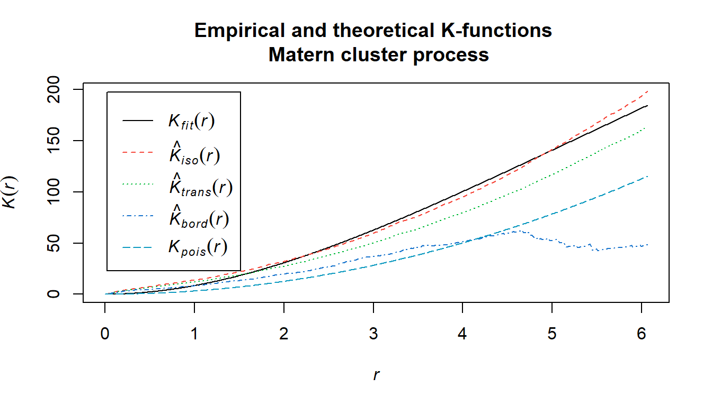
This figure gives the theoretical and empirical K-functions of the Matern cluster process model. The cyan line is the homogeneous Poisson process, which we have long since established is ill-fitted to the data. The black line is our empirical K-function, and the red line is the theoretical K-function under the model.
Based off of this plot of the K-function, it appears in fact that the Matern cluster process model fit using the intensity and parameter estimates from the inhomogeneous Poisson process model fit earlier is fairly consistent at estimating the true underlying process given that the discrepancy between the theoretical and empirical K-functions is very low even up to very large distances.
It’s been debated at length as to whether incidences of school shootings give rise to future events, as long as they’ve been happening in the modern day. With respect to how this model applies in context, we have established that it’s indeed possible that this is the case, as demonstrated by how well the proposed Matern process model fits to the empirical process.
The model gives a recommended range of \(R\) to be \([0, 6.0633]\), which is the range around some event around which other future events may occur. The model converges to the range \(R \approx 3.3597\) and \(\kappa \approx 0.0144\), which is the intensity of the random variable for parent events, which contextually refer to those events which inspire others. The range gives us the approximate radius around some event that some future event may take place.
Ascertaining the reason as to why this happens would have to be left for some future work, perhaps incorporating some of the unused categorical variables that were included in the data, such as whether the event was preplanned. The data can also be looked at on an areal level against population size and compared next to the accessibility of both mental healthcare and guns (as shown in the Appendix). One also wonders how one might model these tragedies from a spatiotemporal perspective, as it is well documented how events have been on the rise in the past several years (also shown in the Appendix).
| kappa | R | c | w(t) |
|---|---|---|---|
| 0.0144 | 3.3597 | 0.25 | 1 |
This Matern cluster process model should be seen first and foremost as a building block upon which future work by individuals in public health, sociology, criminology, etc. can build. As with any instances of tragedy, many unresolved questions remain. Our hope is that some level of positive inspiration can happen from studying these events such that we can become better equipped at averting and dealing with these tragedies.
Adrian Baddeley, Ege Rubak, Rolf Turner (2015). Spatial Point Patterns: Methodology and Applications with R. London: Chapman and Hall/CRC Press, 2015. URL https://www.routledge.com/Spatial-Point-Patterns-Methodology-and-Applications-with-R/Baddeley-Rubak-Turner/9781482210200/
Bivand, Roger S. and Wong, David W. S. (2018) Comparing implementations of global and local indicators of spatial association TEST, 27(3), 716-748. URL https://doi.org/10.1007/s11749-018-0599-x
Hellebuyck, M., Halpern, M., Nguyen, T. and Fritze, D., 2018. The State of Mental Health in America. p.9.
Paez A (2021). An Introduction to Spatial Data Analysis and Statistics: A Course in R. McMaster Invisible Press. ISBN: 978-1-7778515-0-7
Pebesma, E., 2018. Simple Features for R: Standardized Support for Spatial Vector Data. The R Journal 10 (1), 439-446, https://doi.org/10.32614/RJ-2018-009
Riedman, D., Jernegan, E. and O’Neill, D., 2020. K-12 School Shooting Database. [online] Center for Homeland Defense and Security. Available at: https://www.chds.us/ssdb/ [Accessed 15 March 2022].
Siegel, M., 2022. State-by-State Firearm Law Data | State Firearm Laws. [online] Statefirearmlaws.org. Available at: http://www.statefirearmlaws.org/ [Accessed 15 March 2022].
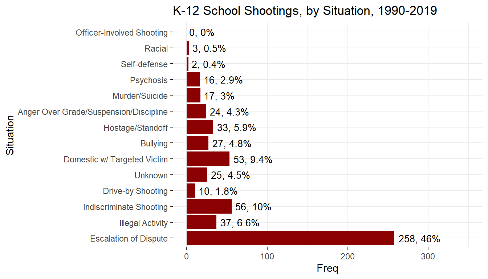
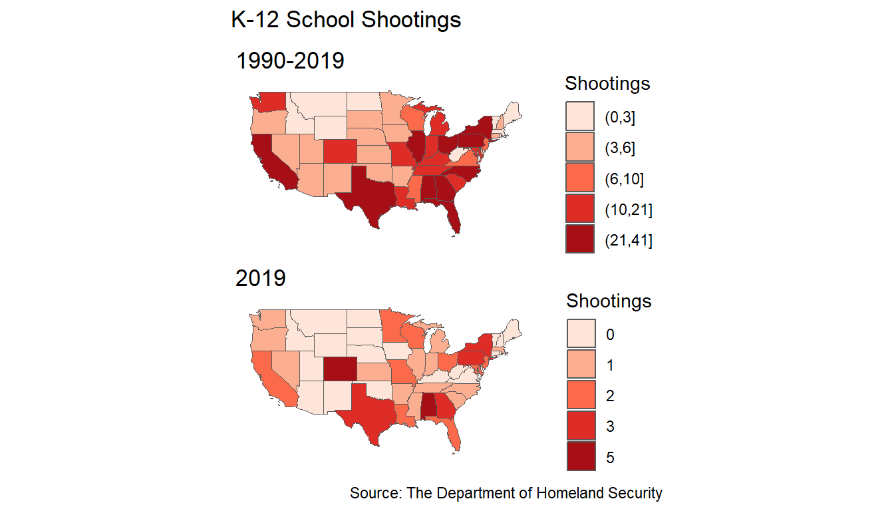
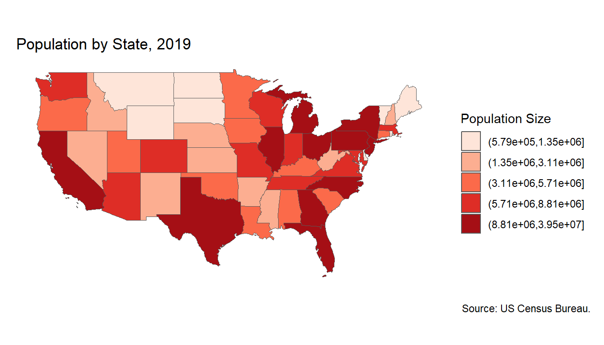
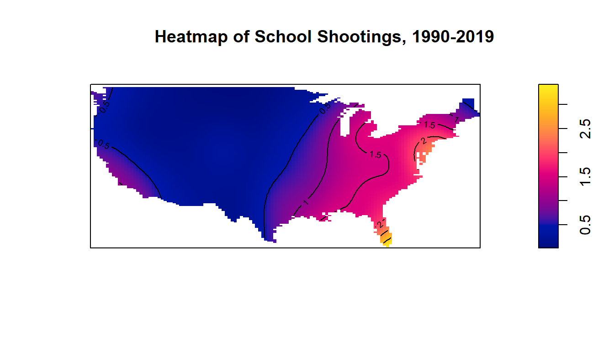
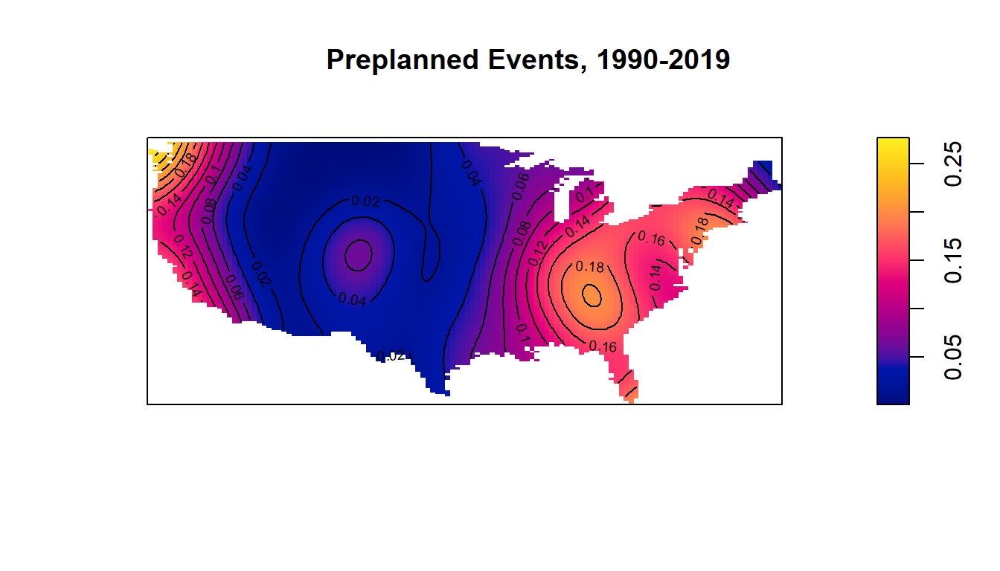
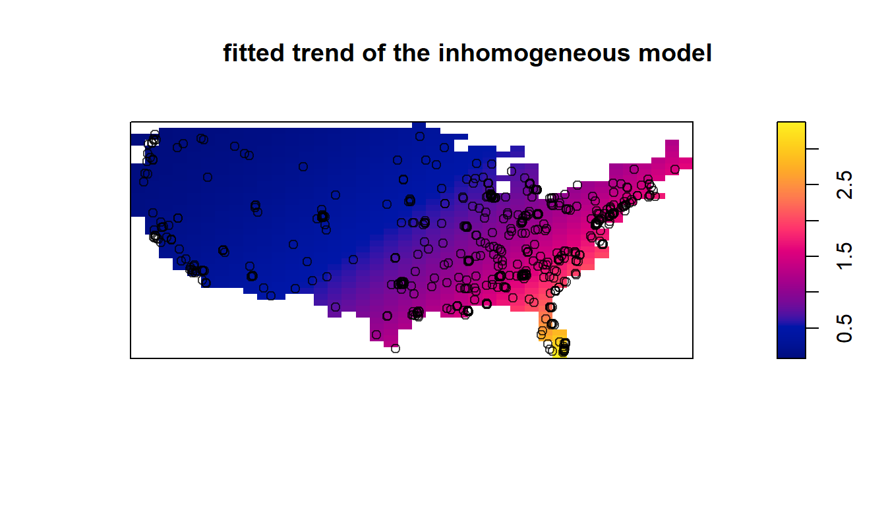
Conditional Monte Carlo test of fitted Poisson model 'fit1' using
quadrat counts
Test statistic: Pearson X2 statisticdata: data from fit1 X2 = 219.54, p-value = 5e-04 alternative hypothesis: clustered
Quadrats: 23 tiles (irregular windows)